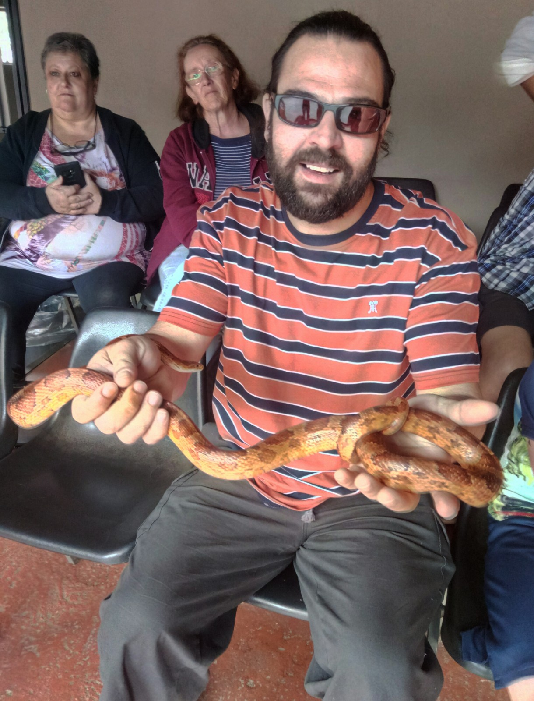
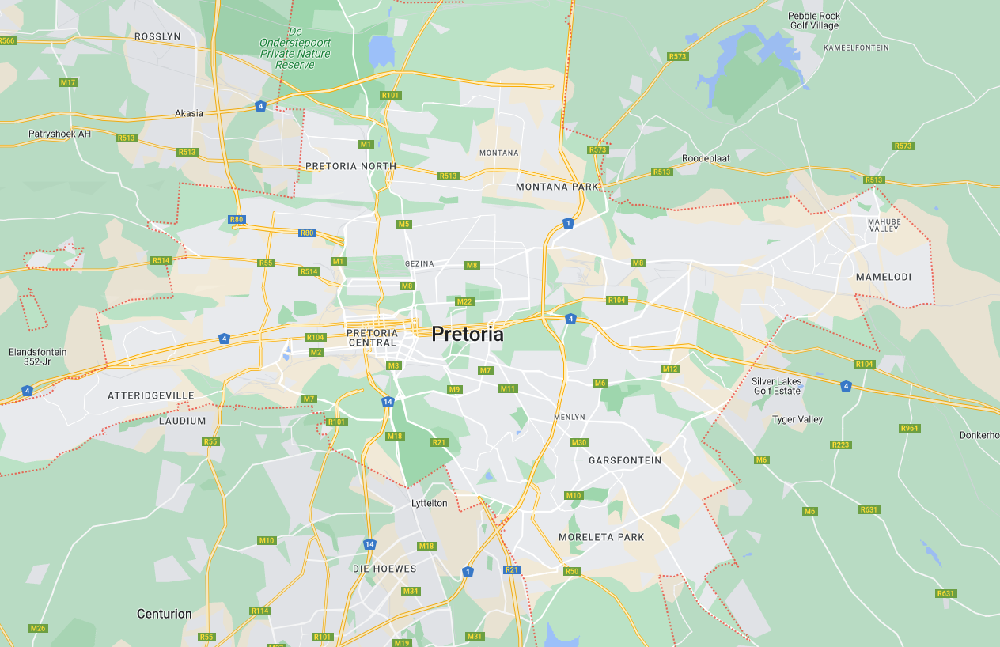
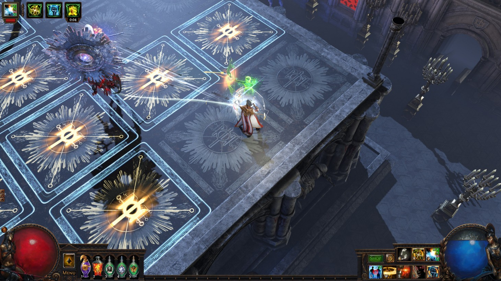
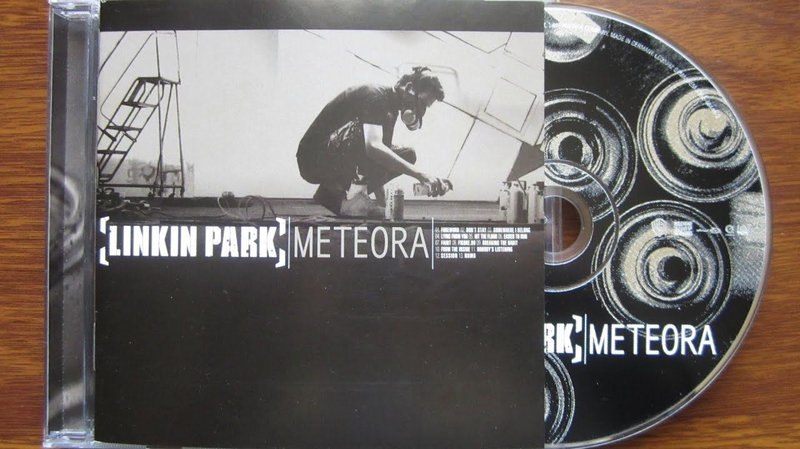
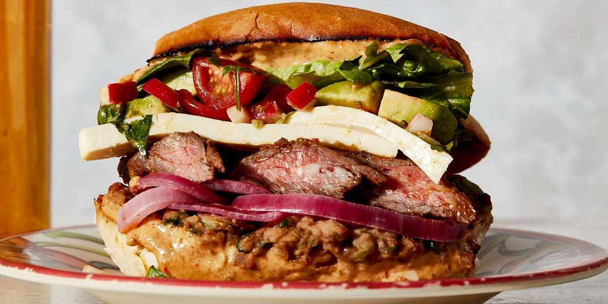

Matthys's Good People Task
Who is George Zondagh?

Introduction
George Zondagh is my Dad, he is originally South Africa and migrated here with my Mum in 2003.
he was born in 1980 and grew up in Pretoria.

Hobbies
He likes gaming, listening to music, making music and cooking. One of the images below is of him with his band in 2007 (he was their lead guitarist).



Why he's a good person
I think that my Dad is a good person for a few reasons. The first reason is that he is always fair, he always tries to
see from both sides of a story and make a fair judgment around it. The second reason is how he is always kind and caring to
my siblings and I. The third and final reason is that he always supports our hobbies as much as he can, for example, I skateboard,
my Dad used to skateboard and he helps me learn new tricks and is understanding when I break a skateboard or shoes because he knows
that skating is a expensive sport where things break a lot. This also links back to my second and first reason, he sees my side of
the story when I damage my skating gear and tries to help in any way he can, one example is him paying me forward so I can keep skating
and I can do jobs later to work for the new things.